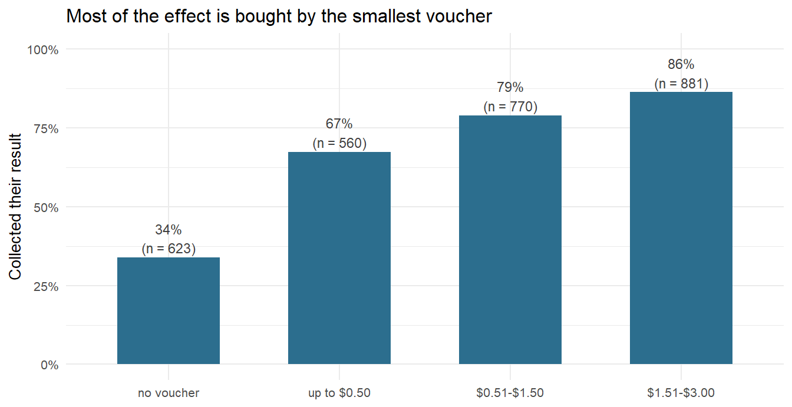
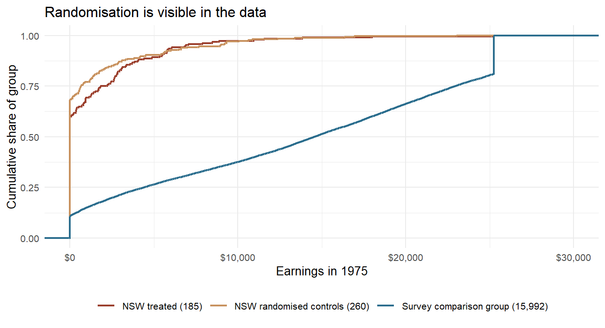

9.1 Experiments
Randomisation, natural experiments, and identification strategies
Section 5.3 left Ronald Fisher at Rothamsted with eight cups of tea and a promise: that the tea test was the smaller of the two things he built there. This is the larger one.
Before Fisher, agricultural trials were laid out in tidy systematic patterns — manure on the left strips, mineral nitrogen on the right — because tidiness looked like rigour. Fisher's argument, made in The Design of Experiments in 1935, was that the allocation should instead be decided by a physical act of chance, and that this act is not a concession to sloppiness but the thing that licenses everything the statistician does afterwards. His own chapter headings put it plainly: the interpretation of an experiment has a reasoned basis, and randomisation is the physical basis of the validity of the test.108 Randomisation does two jobs at once. It severs the link between the treatment and every property of the plot — the drainage, the weeds, the slope, the things nobody measured and nobody thought of. And it manufactures the probability distribution against which the observed difference is judged.
That second point is worth pausing on, because it is the cleanest statement of what this whole chapter is about. In a randomised experiment, the p-value is not an assumption about nature. It is a fact about the coin.
Economics almost never gets to flip the coin. The rest of this section is about what the discipline does instead — and about the vocabulary it invented for the problem, which is the vocabulary the following four sections take for granted.
9.1.1 What We Want and Cannot Have
Take one person and one treatment: a training programme, a scholarship, a job. There are two versions of that person's later earnings. One is what she earns having done the programme. The other is what she would have earned had she not. The effect of the programme on her is the difference between the two.
Definition
For unit \(i\) and a binary treatment \(D_i \in \{0, 1\}\), the two potential outcomes are \(Y_i(1)\), the outcome under treatment, and \(Y_i(0)\), the outcome without it. The causal effect for that unit is
\[\delta_i = Y_i(1) - Y_i(0)\]
What the data contain is only \(Y_i = D_i \cdot Y_i(1) + (1 - D_i) \cdot Y_i(0)\) — one of the two, never both.
Because individual effects are unknowable, causal work targets averages: the average treatment effect \(\text{ATE} = E[Y(1) - Y(0)]\) over everybody, and the average treatment effect on the treated \(\text{ATT} = E[Y(1) - Y(0) \mid D = 1]\) over the people who actually got it. These two are not the same number, and which one a study delivers is decided by its design.
Paul Holland gave this its name in 1986: the fundamental problem of causal inference.109 It is worth seeing it for what it structurally is — a missing-data problem of the most severe kind. Half of every row is missing, and it is missing by construction, not by accident. Section 4.1 spent a chapter on data that are missing because someone declined to answer; here the absent value never existed in the first place.
The workaround is always the same: use other units as a stand-in for the counterfactual. And the whole discipline is the study of when that substitution is defensible. Write out the naive comparison — the difference in average outcomes between those who got the treatment and those who did not — and it splits into two pieces:
\[\underbrace{E[Y \mid D = 1] - E[Y \mid D = 0]}_{\text{what we compute}} \; = \; \underbrace{E[Y(1) - Y(0) \mid D = 1]}_{\text{ATT, what we want}} \; + \; \underbrace{E[Y(0) \mid D = 1] - E[Y(0) \mid D = 0]}_{\text{selection bias}}\]
The second term asks: would the two groups have differed anyway, without any treatment at all? Randomisation forces that term to zero, by construction, in expectation. Everything else in this chapter — matching, difference-in-differences, discontinuities, instruments — is an argument for why that term is zero, or small, or bounded, in some deliberately restricted comparison.
Learn the decomposition rather than the formulas that follow it. Every method in the rest of this chapter is a different answer to one question: why should I believe the untreated group tells me what would have happened to the treated group?
9.1.2 Paying People to Learn Their HIV Status
In 2004, rural Malawi had a puzzle worth money. Door-to-door HIV testing was free and widely accepted, but the results were only available at a testing centre a few kilometres away, and most people never collected them. An untested guess about your own status is a bad basis for any decision. Rebecca Thornton ran an experiment: everyone tested was given a voucher, randomly drawn, worth between nothing and about three dollars, averaging around a dollar — roughly a day's casual wage — and redeemable only if they walked to the centre and asked for their result.110
The data below are the teaching extract of her replication file.111 One row is one person; got records whether they collected their result, any whether they received a voucher of any value, tinc the value in US dollars, distvct the distance to the centre in kilometres.
hiv <- read.csv(file.path("data", "Causal", "thornton_hiv.csv")) %>%
rename(learned = got,
incentive = any,
amount = tinc,
distance = distvct,
village = villnum) %>%
filter(!is.na(learned), !is.na(incentive))
nrow(hiv)
#> [1] 2834The analysis is a difference of two means.
hiv %>%
group_by(incentive) %>%
summarise(n = n(), collected = mean(learned))
#> # A tibble: 2 × 3
#> incentive n collected
#> <dbl> <int> <dbl>
#> 1 0 623 0.339
#> 2 1 2211 0.789Without a voucher, 34% came back for their result. With one, 79%. The gap is 45 percentage points in this extract, and it is the largest single behavioural response in this book.112
t.test(learned ~ incentive, data = hiv)
#>
#> Welch Two Sample t-test
#>
#> data: learned by incentive
#> t = -21.593, df = 898.16, p-value < 0.00000000000000022
#> alternative hypothesis: true difference in means between group 0 and group 1 is not equal to 0
#> 95 percent confidence interval:
#> -0.4915022 -0.4096015
#> sample estimates:
#> mean in group 0 mean in group 1
#> 0.3386838 0.7892356R subtracts the groups in label order, so it prints the difference as \(-0.451\) and the statistic as \(t = -21.6\); the sign is bookkeeping, the magnitude is the finding. Note what was not needed to get it: no control variables, no model specification, no robustness table. The estimator is the crudest tool in this book. All of the sophistication went into the design.

Figure 9.1: Share collecting their HIV result, by the value of the randomly assigned voucher. The jump from nothing to a token amount is far larger than any further increase — most of the effect is bought by the first few cents.
The dose-response pattern is the part economists find interesting, and it is only visible because the amount was randomised too. A voucher worth at most fifty cents already lifts collection from 34% to 67%; raising it to two dollars or more adds a further nineteen points. Thornton makes the same point in the paper: even the smallest amount, about a tenth of a day's wage, produced large gains. This does not look like people being paid for their time. It looks like a small nudge past a threshold — which is a hypothesis about mechanism, generated by the design rather than assumed by it.
Now the sanity check that every experiment owes its reader. If assignment was truly random, the groups should look alike on everything measured before the voucher was handed out.
hiv %>%
mutate(hiv2004 = ifelse(hiv2004 < 0, NA, hiv2004)) %>%
group_by(incentive) %>%
summarise(n = n(),
age = mean(age, na.rm = TRUE),
distance = mean(distance),
hiv_positive = mean(hiv2004, na.rm = TRUE))
#> # A tibble: 2 × 5
#> incentive n age distance hiv_positive
#> <dbl> <int> <dbl> <dbl> <dbl>
#> 1 0 623 32.1 1.96 0.0629
#> 2 1 2211 33.7 2.03 0.0627Distance and HIV status match almost exactly. Age does not: the voucher group is 1.6 years older, and a t-test puts that at \(p = 0.007\). This is not a scandal, and pretending otherwise would teach the wrong lesson. Randomisation balances groups in expectation, not in every realised sample; check ten pre-treatment variables and one will typically fail at the 5% level because that is what 5% means. The right response is not to abandon the experiment but to see whether the estimate cares.
lm(learned ~ incentive + age + distance, data = hiv) %>%
summary() %>% coef() %>% round(4)
#> Estimate Std. Error t value Pr(>|t|)
#> (Intercept) 0.3404 0.0276 12.3132 0.0000
#> incentive 0.4488 0.0192 23.4283 0.0000
#> age 0.0018 0.0006 3.0099 0.0026
#> distance -0.0291 0.0062 -4.6516 0.0000The coefficient moves from 0.451 to 0.449. In an experiment, control variables buy precision, not identification — and here they barely buy even that. Compare this with what happens to control variables in the observational world, two subsections down.
The file also stores a small number of unusable HIV results as -1, which is exactly the pattern Section 4.1 warned about: a negative number that is not a quantity but a code, and that a mean will happily swallow. The ifelse() above is the two-second fix.
A second caveat on precision: vouchers were drawn within 119 villages, and people in the same village talk to one another. Allowing for that widens the standard error from about 0.019 to 0.023 and leaves the estimate untouched. Clustered standard errors return in Section 7.2.
Your Turn
Collection rates were 33.9% without a voucher and 78.9% with one.
The effect in percentage points is .
Suppose the vouchers had not been randomised — suppose instead that field workers handed them to whoever seemed least likely to come back. Would the naive difference then be too large or too small?
And the design question. Thornton randomised the voucher amount as well as its existence. What does that buy her that a simple treated-versus-untreated design would not?
9.1.3 Why Economists Rarely Get to Randomise
The obvious obstacles come first. Nobody can randomise a recession, an exchange-rate regime, a minimum wage, a currency union, or a person's parents. Where an experiment is conceivable it is often forbidden, unaffordable, or too slow: the interesting outcomes in labour economics arrive twenty years after the intervention.
But there is a deeper reason, and it is specific to economics. In most sciences, selection into treatment is a nuisance that contaminates the data. In economics it is the subject. People enrol in training because they expect it to pay off. Firms adopt a technology because it suits their workforce. Countries deregulate because of the circumstances that made deregulation attractive. The assignment mechanism is optimising behaviour, which is the thing the discipline exists to study — and this is why selection bias in economics is rarely small and rarely random in sign. The people who take the treatment are systematically the ones for whom it is worth taking.
This is why "we controlled for the observable differences" is a weaker sentence in economics than it sounds. If people choose treatment on the basis of an expected gain that they can see and you cannot — a talent, a plan, a diagnosis, a family situation — then the variable that drives selection is by definition absent from your data set. No amount of controlling closes a gap you cannot measure.
So the economics answer to selection is not a better estimator. It is a better source of variation: some part of the treatment that moved for reasons having nothing to do with the people it moved. Finding one is what the next four sections are about, and what the rest of this section names.
9.1.4 LaLonde's Challenge
In 1986 Robert LaLonde had a data set nobody else could use the way he used it.113 The National Supported Work Demonstration was a mid-1970s American programme offering nine to eighteen months of subsidised work experience to people with severe employment barriers: former offenders, former drug users, long-term welfare recipients, school dropouts. Crucially, it had more applicants than places, and it allocated them by lottery. It was a genuine randomised experiment on a question at the centre of labour economics.
LaLonde's move was not to analyse the experiment. It was to use the experiment as an answer key. Take the experimental estimate as the truth. Then throw away the randomised control group, replace it with a comparison group drawn from a national survey — the kind of comparison group econometricians actually had — and see whether the era's best methods could recover the known answer.
nsw <- read.csv(file.path("data", "Causal", "nsw_experimental.csv"))
cps <- read.csv(file.path("data", "Causal", "cps_controls.csv"))
c(treated = sum(nsw$treat == 1), randomised_controls = sum(nsw$treat == 0),
cps_controls = nrow(cps))
#> treated randomised_controls cps_controls
#> 185 260 15992re78 is earnings in 1978, after the programme; re74 and re75 are earnings before it. The experimental estimate is the difference in 1978 earnings between the 185 people admitted and the 260 turned away by the lottery. Then the same 185 treated men are compared with 15,992 survey respondents instead.
obs <- bind_rows(nsw %>% filter(treat == 1), cps)
models <- list(
"Experiment" = lm(re78 ~ treat, data = nsw),
"Survey controls" = lm(re78 ~ treat, data = obs),
"Survey + controls" = lm(re78 ~ treat + age + educ + black + hisp +
marr + nodegree + re74 + re75, data = obs)
)
modelsummary(models,
coef_map = c("treat" = "Training programme"),
gof_map = c("nobs", "r.squared"),
title = "The same 185 trained men, three comparison groups. Only the first column comes from a lottery.")| Experiment | Survey controls | Survey + controls | |
|---|---|---|---|
| Training programme | 1794.342 | -8497.516 | 699.132 |
| (632.853) | (712.021) | (547.636) | |
| Num.Obs. | 445 | 16177 | 16177 |
| R2 | 0.018 | 0.009 | 0.476 |
The experiment says the programme raised annual earnings by about $1,794. Swap the randomised controls for the survey sample and the same programme appears to have cost its participants $8,498 a year. The sign is wrong, the magnitude is wrong, and the difference between the two numbers — over $10,000 — is pure selection bias. It could hardly be otherwise: the programme deliberately recruited the least employable people in America, and the survey sample is America.

Figure 9.2: Earnings in 1975, before the programme, as cumulative shares. The two randomised groups lie almost on top of one another; the survey comparison group is a different population. Read off where each curve leaves the vertical axis: that is the share with no earnings at all. The blue curve's jump to one just below $26,000 is not behaviour, it is topcoding.
The figure is the point of the whole section. A randomised control group is not merely similar to the treated group; it is drawn from the same population by construction, and the two curves are indistinguishable before the treatment ever happens. The survey group is a different country.
| Variable | NSW treated | NSW control | Survey control |
|---|---|---|---|
| Age | 25.82 | 25.05 | 33.23 |
| Years of schooling | 10.35 | 10.09 | 12.03 |
| Black | 0.84 | 0.83 | 0.07 |
| Hispanic | 0.06 | 0.11 | 0.07 |
| Married | 0.19 | 0.15 | 0.71 |
| No high-school degree | 0.71 | 0.83 | 0.30 |
| Earnings 1974 (USD) | 2095.57 | 2107.03 | 14016.80 |
| Earnings 1975 (USD) | 1532.06 | 1266.91 | 13650.80 |
The wrong estimate is not the imprecise one. It has 16,177 observations, a standard error of $712 and a t-statistic of nearly \(-12\). It is wrong by more than $10,000 and it is wrong with great confidence. Precision is not credibility. A large sample buys the first and none of the second — and the modern era of administrative data, with millions of rows, has made this failure mode cheaper than ever to produce.
Now look at the third column of the table. Add the eight control variables — age, schooling, ethnicity, marital status, degree, and two years of prior earnings — and the estimate becomes +$699. The sign is right. The magnitude is plausible. The standard error is respectable. A referee would not blink. And it is less than half the experimental answer, with nothing on the printout to say so.
That was LaLonde's finding, and it landed hard: the econometric fixes of the day, applied honestly by a competent analyst, did not reliably recover an answer that was known. The literature has argued about it ever since. Rajeev Dehejia and Sadek Wahba showed in 1999 that propensity-score matching on a well-chosen subsample gets close to the experimental number, which is a large part of why matching became popular.114 Jeffrey Smith and Petra Todd then showed how much that success depends on which subsample, which covariates and which specification.115 The debate is the reason Section 9.2 exists, and the reason it is the first of the four method sections rather than the most trusted.
9.1.5 Identification Is Not Estimation
The LaLonde comparison separates two ideas that beginners tend to fuse.
Definition
A parameter is identified if it could be recovered exactly from the data-generating process given an infinite sample, under the assumptions being made. Estimation is what remains after that: extracting the number from a finite sample, with sampling error attached.
An identification strategy is the argument for why a particular comparison in the data corresponds to the causal quantity of interest. It is a claim about how the world assigned the treatment — not a property of the model, the software, or the sample size.
No amount of data solves an identification problem. LaLonde's survey comparison had 16,177 observations and was wrong; the experiment had 445 and was right. More rows would have shrunk the standard error around the wrong number.
Truly Dedicated: two things economists call identification
Behind that definition sits a phrase worth owning: the data-generating process, the mechanism in the world that actually produced the numbers in front of you. Every method in this book is an attempt to say something about that mechanism while only ever seeing its output. Identification is the question of which parts of the mechanism the output can pin down at all, before any question of sample size arises.
Put that way, the word has a much older home in economics than treatment effects have. A market hands you a cloud of price-and-quantity pairs. Every point in it is the intersection of a supply curve and a demand curve, and both curves move. Fit a line through the cloud and you get neither of them — at best you trace out demand in the years when supply happened to do the moving. Elmer Working laid this out in 1927 in a paper whose title is still the best summary of the problem: What do statistical "demand curves" show?116 Trygve Haavelmo turned it into probability theory in 1943 and 1944, and Tjalling Koopmans gave the problem its name and its order and rank conditions in 1949.117 From that tradition come the words under-identified, exactly identified and over-identified, and the reflex of counting equations against unknowns. It is still the meaning you meet first in a structural econometrics course, and it is still alive — agricultural economists identify supply and demand this way today, occasionally by exotic routes such as exploiting changes in the variance of the shocks rather than in their level.118
The design-based meaning of this chapter is the same question asked of a different mechanism. Not which curve produced this point, but which comparison recovers this effect. Both ask what the observable distribution can and cannot pin down. Both are settled by assumptions rather than by data.
And both are best learned the way you may already have met them in R: write the data-generating process yourself, hide the formula, and see whether the method finds its way back to the numbers you chose. That is exactly what Section 4.2 does when it builds a data set by hand — and it is the only situation you will ever be in where the right answer is known.
This has a practical consequence that is worth stating bluntly. An identification strategy is stated in words, before it is stated in code, and it is checked by argument rather than by diagnostics. \(R^2\), t-statistics, information criteria and robustness tables all take the comparison for granted; none of them can tell you that the comparison was never causal to begin with. When you read an empirical economics paper, the identification strategy is what the introduction spends its third and fourth paragraphs on, and it is the only part that cannot be fixed in revision.
9.1.6 The Catalogue of Designs
There are not very many strategies. Almost everything in applied microeconomics is one of the following, or a combination of two.
| Where the variation comes from | The claim you must defend | Design | Where in this book |
|---|---|---|---|
| A coin you flipped yourself | assignment is independent of the potential outcomes | randomised experiment | this section |
| Everything that drove selection was measured | conditional independence, given the covariates | matching, weighting, controls | Section 9.2 |
| Repeated observation of the same unit | what is unobserved about a unit is fixed over time | fixed effects | Section 7.2 |
| A date: something changed for one group only | the groups would have moved in parallel | difference-in-differences | Section 9.3 |
| A threshold: a rule switches at a cut-off | everything else is continuous at the cut-off | regression discontinuity | Section 9.4 |
| A lever that moves treatment and nothing else | relevance and exclusion | instrumental variables | Section 9.5 |
The order is not arbitrary. The designs are ranked by how much they ask you to believe about things you cannot see. Randomisation asks for nothing. Selection on observables asks for the most — that every driver of selection is sitting in your data set, an assumption that is untestable in principle and, in LaLonde's case, demonstrably false. The designs in between each buy their credibility by narrowing the comparison: to a period, to a neighbourhood of a threshold, to the people a lever happens to move.
A common misreading is that these are six ways of estimating the same number. They are not. A discontinuity design identifies an effect at the cut-off; an instrument identifies the effect for the people the instrument moves; difference-in-differences identifies it for the treated group in the treated period. Whose effect you end up with is a feature of the design, decided before the data are opened, and the honest write-up says so in the abstract.
9.1.7 When the Design Runs Out
Four situations turn up constantly in economics and are not on the list above. Naming them is part of the vocabulary.
The policy that hit everybody. A national reform, a currency changeover, a pandemic — there is no untreated group, because the treatment was the country. The usual answers are to build a comparison group rather than find one, which is what the synthetic control method does by weighting other regions into an artificial twin of the treated one,119 or to compare against the treated unit's own past, which turns the problem into a time-series question. Both work. Both buy identification with an assumption stronger than anything in the table above, and the honest paper says which.
The lever that barely moves. An instrument that shifts the treatment only weakly is worse than no instrument at all: the estimate drifts back towards the biased comparison it was meant to fix, and the standard errors understate how little is known.120 The familiar guard is the first-stage F-statistic and the rule of thumb that it should clear 10 — a benchmark from Staiger and Stock, formalised by Stock and Yogo, and by now widely thought too generous.
The treatment that spreads. Every design in the table assumes that one unit's treatment does not change another unit's outcome. Vaccination breaks that. So does a training programme large enough to move local wages, and so does anything involving classmates, colleagues or neighbours. The special case where the group's average causes the individual and the individual is part of the average has a name of its own — Charles Manski's reflection problem — and it is genuinely unidentified, not merely difficult: you cannot tell the mirror from the person.121
The question that was never causal. Some of the most useful numbers in economics are accounting, not causation. How much of the gender wage gap corresponds to measured differences in occupation, hours and experience is an Oaxaca-Blinder decomposition — the subject of Section 6.3 — and it is an entirely respectable exercise as long as nobody calls the unexplained remainder "discrimination". A decomposition apportions a difference. It does not say what would happen if you changed something.
Two words worth separating for good. Internal validity asks whether the estimate is right for the people and the setting it was measured in. External validity asks whether it tells you anything about anywhere else. Designs buy internal validity by narrowing the comparison — to a threshold, a period, the people a lever moves — and every narrowing costs external validity. The trade is unavoidable; pretending it is not is the most common overreach in applied work.
9.1.8 Natural Experiments
Between the coin flip and the survey comparison sits the design that gave economics its modern shape.
Definition
A natural experiment is variation in treatment produced by nature, an institution or an administrative accident, which the researcher argues is as good as randomly assigned with respect to the outcome. The researcher does not assign anything. The researcher finds an assignment that somebody else, or something else, already made — and then argues that it was made for reasons unrelated to the outcome.
A quasi-experiment is the same idea with the "as good as random" claim resting on a design feature rather than on chance: a threshold, a timing, an eligibility rule.
A short catalogue from economics, each of which is now a section in some textbook:
- The draft lottery. Birth dates were drawn from a drum to determine Vietnam draft eligibility. Joshua Angrist used the drawn numbers to isolate the effect of veteran status on later earnings — the lottery moved military service, and nothing else about a man depended on his birth date.122
- Quarter of birth. Compulsory schooling laws tie the leaving date to a birthday, so children born in different quarters were forced to complete different amounts of schooling. Angrist and Alan Krueger used this to estimate the returns to education.123
- The Mariel boatlift. In 1980, 125,000 Cubans arrived in Miami within five months. David Card treated it as a labour-supply shock that no Miami employer or worker had chosen, and asked what it did to local wages.124
- A state border. New Jersey raised its minimum wage in 1992; Pennsylvania did not. Card and Krueger surveyed fast-food restaurants on both sides.125
- An actual government lottery. Oregon could not afford Medicaid places for everyone eligible in 2008, so it drew names. The result is a randomised experiment on health insurance that no researcher had to design.126
- A wall. German reunification remains one of the most-used natural experiments in European economics, and much of that work runs on the household panel this book keeps returning to in Section 2.2.
The first natural experiment
London, 1854. Two companies piped water into the same streets, sometimes into neighbouring houses. Some years earlier one of them had moved its intake upstream of the city's sewage; the other still drew from the tidal Thames. When cholera came, John Snow realised what he was looking at: households had been sorted between two water supplies by an accident of commercial history, in his words "without their choice, and, in most cases, without their knowledge".127
Snow counted deaths per 10,000 houses and found the rate roughly eight times higher among the customers of the polluted supply. He had no microscope evidence, no accepted theory of germs, and no statistics beyond a ratio. What he had was an assignment mechanism he could argue was unrelated to everything else about a household — three decades before the cholera bacterium was accepted. The design carried the claim, not the arithmetic.
The word natural flatters these designs. Nothing about the variation is automatic, and the credibility never comes from the data — it comes from an argument about institutional detail that the reader has to be able to check. Draft lottery numbers were genuinely drawn from a drum. Quarter of birth is not: season of birth correlates with family background, and that objection has been argued over for thirty years.
A working test: if you cannot explain in two sentences why the assignment is unrelated to the outcome, you do not have a natural experiment. You have a control variable with a good story attached.
The 2021 Nobel Memorial Prize went to David Card for his empirical work in labour economics — the boatlift and the minimum wage among it — and to Joshua Angrist and Guido Imbens for the methodological half of the same story: turning "as good as random" from a rhetorical flourish into a disciplined claim with stateable assumptions and testable implications. Two years earlier the prize had gone to Abhijit Banerjee, Esther Duflo and Michael Kremer for going the other way and simply running the experiments, of which Thornton's is one of thousands.128 Both prizes are about the same sentence: the credibility of an estimate lives in its design.
9.1.9 Where Exogenous Variation Comes From
The question that replaces which method should I use? is a stranger one: who, or what, already randomised something for me? It sounds like a question about luck. In practice it is a question about institutions, and the answer is learned by reading history, administrative rules and fine print rather than econometrics.
There are only a handful of places to look. Here they are, with one famous American Economic Review paper each — chosen because every entry is a different idea about where variation comes from, not a different estimator.
| Where the variation comes from | What was actually exogenous | The paper |
|---|---|---|
| A lottery somebody else ran | draft numbers drawn by date of birth | Angrist (1990)129 |
| The weather | year-to-year swings in temperature and rain in the same county | Deschênes and Greenstone (2007)130 |
| A border between jurisdictions | New Jersey raised its minimum wage, Pennsylvania did not | Card and Krueger (1994)131 |
| A political rupture | Germany divided in 1945, reunited in 1990 | Alesina and Fuchs-Schündeln (2007)132 |
| A rule with a threshold | health insurance switches on at the 65th birthday | Card, Dobkin and Maestas (2008)133 |
| Biology | identical twins who ended up with different amounts of schooling | Ashenfelter and Krueger (1994)134 |
Lotteries. The purest case, because somebody has already done the randomising and written down the result. Draft lotteries, visa lotteries, housing-voucher lotteries — the Moving to Opportunity experiment assigned vouchers by lottery among applicant families and is still being mined decades later135 — school-place lotteries wherever a school is oversubscribed, and the Colombian voucher programme that drew winners because the money ran out.136 The practical skill is knowing that these lotteries exist and that the losing applicants were recorded.
Nature. Weather is the workhorse: rainfall, temperature, storms, frost dates. It is genuinely outside anyone's control, it varies year to year around a stable local average, and it is measured everywhere and archived for a century. That is why you keep hearing about it in the social sciences.
Weather is also the most over-used instrument in economics, and for a precise reason. An instrument must move the treatment and nothing else that touches the outcome. Weather moves almost everything — harvests, moods, traffic, electricity prices, whether people leave the house, whether the interviewer got to the door. The moment your outcome plausibly responds to rain through a second channel, the exclusion restriction is gone, and no statistical test will tell you.
Worth knowing too: the weather paper in the table above drew a published Comment showing that coding and data errors reversed key results, followed by a Reply.137 That is not a reason to distrust the design. It is what a field looks like when identification claims are actually checked.
Federalism. A country that lets its regions legislate separately is running experiments it never intended: sixteen Bundesländer, fifty American states, twenty-six Swiss cantons. One state introduces free childcare, tuition fees, a smoking ban, a school reform; its neighbours do not, and the difference is dated to the month. Bruno Frey and Alois Stutzer built much of the early happiness literature on exactly this, using the differing degrees of direct democracy across Swiss cantons.138 This is the design most likely to be within reach of a student thesis in Germany — but see the parallel-trends warning that Section 9.3 is built around, because a state that reforms is not a random state.
Rupture. History occasionally splits a population and then puts it back together. German division is the most-used case in European economics, and two of its best-known papers are AER articles running on the household panel of Section 2.2: Alesina and Fuchs-Schündeln asked whether forty years of communism left East Germans with a durable taste for redistribution.139 Frijters, Haisken-DeNew and Shields used the post-1990 income surge in the East to ask what money does to life satisfaction.140 Ruptures of other kinds do the same work: the Allied bombing of Japanese cities as a shock to city size,141 the mortality rates faced by European settlers centuries ago as an instrument for the institutions they left behind.142
Rules and thresholds. Administrations run on cut-offs, and every cut-off is a small experiment: an age of eligibility, a class-size cap, an income limit for a benefit, a grade needed for admission, the margin by which an election was won. These are the raw material of Section 9.4, and they are the most abundant source of all — every bureaucracy generates them and most of them are documented.
Biology and family. Twins, siblings, the sex composition of a couple's first two children, the exact date of birth relative to a school-entry cut-off. Here the "randomisation" is nature's, and the assumption is usually the most demanding of the lot: that within a twin pair the difference in schooling is unrelated to ability.
Notice what half these papers have in common: a published Comment attacking the identifying assumption, and a Reply. Deschênes and Greenstone drew one, Acemoglu, Johnson and Robinson drew one. This is the healthy version of the field. An identification strategy is a claim that can be argued with, which is exactly what distinguishes it from a specification that can only be preferred or not preferred.
9.1.10 The Data Strategy Behind the Identification Strategy
Here is the habit that distinguishes empirical economics from a methods course, and it is the reason this section sits before the four method sections rather than after them.
Ask an applied economist what they are working on and the answer is usually not a method. It is a data set and a source of variation: the universe of Danish tax records linked to the birth register, linked employer-employee data with the exact date of every plant closure, admissions files from an oversubscribed school that assigns places by lottery. The design is chosen first, in words, and the data are then hunted down, requested, merged or digitised because they are what makes the design checkable.
This turns the practical question around. Not which model do I run on my data? but what has to be in the data set for my argument to be inspectable? Each design has requirements that are not incidental:
- Difference-in-differences needs at least two periods, correctly dated treatment, and — for the parallel-trends claim to be inspectable at all — several periods before the change.
- Regression discontinuity needs the running variable raw and unrounded, plus enough observations near the cut-off. A sample of 2,000 is useless if only 60 sit close to the threshold, and no amount of statistical care recovers a variable that was banded into deciles before it reached you.
- Instrumental variables needs a variable that is in the data for reasons unrelated to the study: a lottery number, a distance, a birth date, a rainfall record.
- Matching needs the covariates that actually drove selection — which means knowing the assigning institution well enough to know what they were. That is fieldwork, not statistics.
- Fixed effects needs the same unit observed more than once, which is a decision made years earlier by whoever designed the survey.
Two things follow. First, the value of a data source is not its size but the comparisons it permits: a household panel like the one in Section 2.2 is a data strategy, bought at enormous cost, whose entire purpose is to make within-person comparisons possible. Second, the identification strategy has to be settled before the data are collected or requested, because it determines what has to be in them.
Truly Dedicated: is the credibility revolution a good thing?
The design-based turn has serious critics, and a book that only reported the enthusiasm would be misleading.
Angrist and Pischke called it the credibility revolution and argued that empirical economics had become dramatically more believable.143 Angus Deaton replied that credibility about what is the question: a well-identified local effect can be less useful than a worse-identified parameter that answers the question a policymaker actually asked, and the mechanism — why the effect exists — is what transfers to a different country or decade.144 James Heckman has pressed the same point from the structural side: models with explicit behaviour can simulate policies that have never been tried, which no design-based comparison can do.
There is also a selection problem in the profession itself. If identifiable questions get published, the questions that admit a clean design will be studied and the others quietly will not — the streetlight problem, applied to a discipline. Exchange-rate regimes, industrial policy and the causes of growth do not come with thresholds and lotteries.
And there is the parameter itself. An instrument generally identifies a local average treatment effect, the effect for the people whose treatment status the instrument actually moves. That is a real effect for a real subgroup, but it may not be the group any policy is about, and Imbens's defence of it — better LATE than nothing — concedes the point in its title.145
None of this argues for going back to controlling for things and hoping. It argues that "what is your identification strategy?" and "whose effect is it, and does anyone want to know it?" are two separate questions, and that a good paper answers both.
Your Turn
Match each situation to the design that fits it best.
A city gives free tablets to every pupil in schools whose deprivation index exceeds 40, and nothing to schools just below.
From January 2024, one federal state makes childcare free; the other fifteen do not. You have annual survey data for all states since 2015.
You want the effect of attending a selective school. Places are allocated by lottery among applicants, but some winners decline the place.
True or false: an estimate built on 16,177 observations deserves more trust than one built on 445, because more data means less error.
And one question with no formula behind it. A colleague has panel data on 40,000 firms and asks which method will "make the endogeneity go away". What is the honest answer?
Reading
If you read one thing after this section, make it the first chapter of Angrist and Pischke's Mastering 'Metrics, which sets up the whole apparatus with an example about health insurance and no matrix algebra. If you want the same material with R and Stata code beside it, Scott Cunningham's Causal Inference: The Mixtape is the book the data in this section came from (Cunningham, 2021).
An estimate is only as good as the comparison behind it, and the comparison is decided by the design, not by the software. Randomisation is the benchmark because it makes the selection-bias term zero by construction; every other design in this chapter is an argument for why that term can be ignored in some deliberately narrowed comparison. Economics rarely gets to randomise, so it hunts for variation that somebody else randomised by accident — and then chooses its data accordingly.
The four sections that follow are that catalogue in detail: comparability built from covariates in Section 9.2, from timing in Section 9.3, from a threshold in Section 9.4, and from a lever in Section 9.5.
Readings
- Angrist, J. D., & Pischke, J.-S. (2015). Mastering 'Metrics: The Path from Cause to Effect. Princeton University Press. The gentlest serious introduction to the five designs.
- Cunningham, S. (2021). Causal Inference: The Mixtape. Yale University Press (Cunningham, 2021). Free online, with the NSW and Malawi data used here.
- Huntington-Klein, N. (2022). The Effect: An Introduction to Research Design and Causality. Chapman & Hall. Design first, estimator second; free online.
- Gerber, A. S., & Green, D. P. (2012). Field Experiments: Design, Analysis, and Interpretation. W. W. Norton. For when you do get to flip the coin.
- Imbens, G. W., & Rubin, D. B. (2015). Causal Inference for Statistics, Social, and Biomedical Sciences: An Introduction. Cambridge University Press. The potential-outcomes framework at full length.
Fisher, R. A., The Design of Experiments, Oliver & Boyd, 1935, chapter II, sections 6 to 10 — "Interpretation and its Reasoned Basis", "Randomisation; the Physical Basis of the Validity of the Test", "The Effectiveness of Randomisation". The often-quoted formulation that randomisation is "the reasoned basis for inference" is a later paraphrase, not Fisher's own sentence.↩︎
Holland, P. W. (1986). Statistics and Causal Inference. Journal of the American Statistical Association 81(396), 945-960, https://doi.org/10.2307/2289064. The notation is older. Jerzy Neyman introduced potential outcomes for randomised experiments in 1923 — in English as On the Application of Probability Theory to Agricultural Experiments. Essay on Principles. Section 9, translated by Dabrowska and Speed, Statistical Science 5(4), 1990, 465-472 — and Donald Rubin extended them to observational studies in Estimating causal effects of treatments in randomized and nonrandomized studies, Journal of Educational Psychology 66(5), 1974, 688-701.↩︎
Thornton, R. L. (2008). The Demand for, and Impact of, Learning HIV Status. American Economic Review 98(5), 1829-1863, https://doi.org/10.1257/aer.98.5.1829.↩︎
The extract is
thornton_hivfrom thecausaldatapackage accompanying Cunningham's Causal Inference: The Mixtape;nsw_experimentalandcps_controlsbelow arensw_mixtapeandcps_mixtapefrom the same source, which in turn follow the Dehejia-Wahba sample of LaLonde's data. Snapshots are stored indata/Causal/so that the book builds without a network connection.↩︎The published paper reports 43 percentage points on its own estimation sample; the small difference comes from how the teaching extract handles missing outcomes and the zero-value vouchers. The lesson survives either number.↩︎
LaLonde, R. J. (1986). Evaluating the Econometric Evaluations of Training Programs with Experimental Data. American Economic Review 76(4), 604-620.↩︎
Dehejia, R. H., & Wahba, S. (1999). Causal Effects in Nonexperimental Studies: Reevaluating the Evaluation of Training Programs. Journal of the American Statistical Association 94(448), 1053-1062, https://doi.org/10.1080/01621459.1999.10473858.↩︎
Smith, J. A., & Todd, P. E. (2005). Does matching overcome LaLonde's critique of nonexperimental estimators? Journal of Econometrics 125(1-2), 305-353, https://doi.org/10.1016/j.jeconom.2004.04.011.↩︎
Working, E. J. (1927). What Do Statistical "Demand Curves" Show? Quarterly Journal of Economics 41(2), 212-235, https://doi.org/10.2307/1883501. Elmer J. Working, not his brother Holbrook.↩︎
Haavelmo, T. (1943). The Statistical Implications of a System of Simultaneous Equations. Econometrica 11(1), 1-12, https://doi.org/10.2307/1905714; Haavelmo, T. (1944). The Probability Approach in Econometrics. Econometrica 12 (Supplement), 1-115; Koopmans, T. C. (1949). Identification Problems in Economic Model Construction. Econometrica 17(2), 125-144, https://doi.org/10.2307/1905689.↩︎
Santeramo, F. G. (2015). A cursory review of the identification strategies. Agricultural and Food Economics 3, article 24, https://doi.org/10.1186/s40100-015-0042-5. The variance route is Rigobon, R. (2003), Identification Through Heteroskedasticity, Review of Economics and Statistics 85(4), 777-792, https://doi.org/10.1162/003465303772815727.↩︎
Abadie, A., & Gardeazabal, J. (2003). The Economic Costs of Conflict: A Case Study of the Basque Country. American Economic Review 93(1), 113-132, https://doi.org/10.1257/000282803321455188; Abadie, A., Diamond, A., & Hainmueller, J. (2010). Synthetic Control Methods for Comparative Case Studies. Journal of the American Statistical Association 105(490), 493-505, https://doi.org/10.1198/jasa.2009.ap08746.↩︎
Bound, J., Jaeger, D. A., & Baker, R. M. (1995). Problems with Instrumental Variables Estimation When the Correlation Between the Instruments and the Endogenous Explanatory Variable Is Weak. Journal of the American Statistical Association 90(430), 443-450, https://doi.org/10.1080/01621459.1995.10476536. The rule of thumb is from Staiger, D., & Stock, J. H. (1997), Econometrica 65(3), 557-586; the critical values are Stock, J. H., & Yogo, M. (2005), Testing for Weak Instruments in Linear IV Regression, in Identification and Inference for Econometric Models, Cambridge University Press, 80-108.↩︎
Manski, C. F. (1993). Identification of Endogenous Social Effects: The Reflection Problem. Review of Economic Studies 60(3), 531-542, https://doi.org/10.2307/2298123.↩︎
Angrist, J. D. (1990). Lifetime Earnings and the Vietnam Era Draft Lottery: Evidence from Social Security Administrative Records. American Economic Review 80(3), 313-336.↩︎
Angrist, J. D., & Krueger, A. B. (1991). Does Compulsory School Attendance Affect Schooling and Earnings? Quarterly Journal of Economics 106(4), 979-1014, https://doi.org/10.2307/2937954.↩︎
Card, D. (1990). The Impact of the Mariel Boatlift on the Miami Labor Market. Industrial and Labor Relations Review 43(2), 245-257, https://doi.org/10.1177/001979399004300205.↩︎
Card, D., & Krueger, A. B. (1994). Minimum Wages and Employment: A Case Study of the Fast-Food Industry in New Jersey and Pennsylvania. American Economic Review 84(4), 772-793.↩︎
Finkelstein, A., et al. (2012). The Oregon Health Insurance Experiment: Evidence from the First Year. Quarterly Journal of Economics 127(3), 1057-1106, https://doi.org/10.1093/qje/qjs020.↩︎
Snow, J., On the Mode of Communication of Cholera, 2nd edition, John Churchill, 1855. The comparison of the Southwark & Vauxhall and Lambeth supplies is in the section on the 1854 South London epidemic.↩︎
The Royal Swedish Academy of Sciences, Prize in Economic Sciences 2021: one half to David Card "for his empirical contributions to labour economics", the other half jointly to Joshua D. Angrist and Guido W. Imbens "for their methodological contributions to the analysis of causal relationships". The 2019 prize went to Abhijit Banerjee, Esther Duflo and Michael Kremer "for their experimental approach to alleviating global poverty". https://www.nobelprize.org/prizes/economic-sciences/↩︎
Angrist, J. D. (1990). Lifetime Earnings and the Vietnam Era Draft Lottery: Evidence from Social Security Administrative Records. American Economic Review 80(3), 313-336.↩︎
Deschênes, O., & Greenstone, M. (2007). The Economic Impacts of Climate Change: Evidence from Agricultural Output and Random Fluctuations in Weather. American Economic Review 97(1), 354-385, https://doi.org/10.1257/aer.97.1.354.↩︎
Card, D., & Krueger, A. B. (1994). Minimum Wages and Employment: A Case Study of the Fast-Food Industry in New Jersey and Pennsylvania. American Economic Review 84(4), 772-793.↩︎
Alesina, A., & Fuchs-Schündeln, N. (2007). Good-bye Lenin (or Not?): The Effect of Communism on People's Preferences. American Economic Review 97(4), 1507-1528, https://doi.org/10.1257/aer.97.4.1507. The evidence comes from the 1997 and 2002 waves of the German Socio-Economic Panel.↩︎
Card, D., Dobkin, C., & Maestas, N. (2008). The Impact of Nearly Universal Insurance Coverage on Health Care Utilization: Evidence from Medicare. American Economic Review 98(5), 2242-2258, https://doi.org/10.1257/aer.98.5.2242.↩︎
Ashenfelter, O., & Krueger, A. (1994). Estimates of the Economic Return to Schooling from a New Sample of Twins. American Economic Review 84(5), 1157-1173. The sample was collected at the annual Twins Festival in Twinsburg, Ohio.↩︎
Chetty, R., Hendren, N., & Katz, L. F. (2016). The Effects of Exposure to Better Neighborhoods on Children: New Evidence from the Moving to Opportunity Experiment. American Economic Review 106(4), 855-902, https://doi.org/10.1257/aer.20150572.↩︎
Angrist, J., Bettinger, E., Bloom, E., King, E., & Kremer, M. (2002). Vouchers for Private Schooling in Colombia: Evidence from a Randomized Natural Experiment. American Economic Review 92(5), 1535-1558, https://doi.org/10.1257/000282802762024629.↩︎
Fisher, A. C., Hanemann, W. M., Roberts, M. J., & Schlenker, W. (2012). Comment. American Economic Review 102(7), 3749-3760, https://doi.org/10.1257/aer.102.7.3749; Reply by Deschênes and Greenstone, same issue, 3761-3773, https://doi.org/10.1257/aer.102.7.3761.↩︎
Frey, B. S., & Stutzer, A. (2000). Happiness, Economy and Institutions. The Economic Journal 110(466), 918-938, https://doi.org/10.1111/1468-0297.00570. Their SOEP-based work includes Stutzer, A., & Frey, B. S. (2008), Stress that Doesn't Pay: The Commuting Paradox, Scandinavian Journal of Economics 110(2), 339-366, https://doi.org/10.1111/j.1467-9442.2008.00542.x — a panel design rather than a natural experiment, and a good illustration of the difference.↩︎
Alesina, A., & Fuchs-Schündeln, N. (2007). Good-bye Lenin (or Not?): The Effect of Communism on People's Preferences. American Economic Review 97(4), 1507-1528, https://doi.org/10.1257/aer.97.4.1507. The evidence comes from the 1997 and 2002 waves of the German Socio-Economic Panel.↩︎
Frijters, P., Haisken-DeNew, J. P., & Shields, M. A. (2004). Money Does Matter! Evidence from Increasing Real Income and Life Satisfaction in East Germany Following Reunification. American Economic Review 94(3), 730-740, https://doi.org/10.1257/0002828041464551.↩︎
Davis, D. R., & Weinstein, D. E. (2002). Bones, Bombs, and Break Points: The Geography of Economic Activity. American Economic Review 92(5), 1269-1289, https://doi.org/10.1257/000282802762024502.↩︎
Acemoglu, D., Johnson, S., & Robinson, J. A. (2001). The Colonial Origins of Comparative Development: An Empirical Investigation. American Economic Review 91(5), 1369-1401, https://doi.org/10.1257/aer.91.5.1369. The mortality data were disputed by Albouy, D. (2012), Comment, American Economic Review 102(6), 3059-3076, with a Reply at 3077-3110.↩︎
Angrist, J. D., & Pischke, J.-S. (2010). The Credibility Revolution in Empirical Economics: How Better Research Design Is Taking the Con out of Econometrics. Journal of Economic Perspectives 24(2), 3-30, https://doi.org/10.1257/jep.24.2.3.↩︎
Deaton, A. (2010). Instruments, Randomization, and Learning about Development. Journal of Economic Literature 48(2), 424-455, https://doi.org/10.1257/jel.48.2.424.↩︎
Imbens, G. W. (2010). Better LATE Than Nothing: Some Comments on Deaton (2009) and Heckman and Urzua (2009). Journal of Economic Literature 48(2), 399-423, https://doi.org/10.1257/jel.48.2.399.↩︎